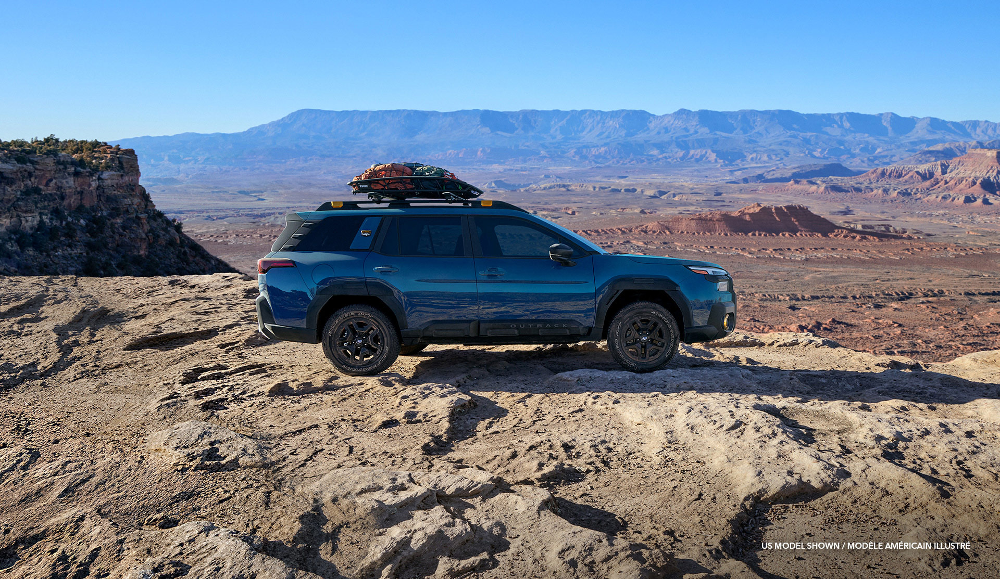

Subaru Adventure Guide

Planning a road trip or off‑grid camping? Your Subaru is ready. Here are five tips to make your adventure safe and memorable.
1. Know your ground clearance
Most Subarus have 8.7 inches – enough for forest roads but avoid deep ruts. The Outback Wilderness offers 9.5 inches.
2. Use X‑MODE for tricky terrain
Engage X‑MODE (on Crosstrek, Forester, Outback) when driving on snow, mud, or steep hills. It optimizes AWD and enables hill descent control.
3. Pack smart
Fold rear seats for a sleeping platform. A roof box adds cargo space without blocking rear visibility.
4. Tire pressure matters
Lower pressure (around 18-22 psi) improves traction on sand or soft dirt – but remember to reinflate before highway driving.
5. Leave No Trace
Subaru partners with the National Forest Foundation. Always pack out trash, stay on designated trails, and respect wildlife.